by Fred Eaton
Summary:
This article is meant to add to the information in the MK3 shop manual on the assembling and adjustment of the overload backfire device. The backfire device is designed to slip when the engine backfires so the sprag bearing and associated gears are not damaged. If this device is adjusted too loosely, the starter will not turn over the engine. If this device is adjusted too tight, a backfire can damage parts of the starter train. In the MK3 shop manual it calls for a slip torque of 50 ft-lbs. Do not mistake this to mean you torque the nut on the backfire device to 50 ft-lbs. What this means is that 50 ft-lbs. of torque applied to the shaft will cause the device to slip. In this article I will show the proper assembly of this device and how I believe the designers of this device wanted the device adjusted.
Overload backfire gear assembly:

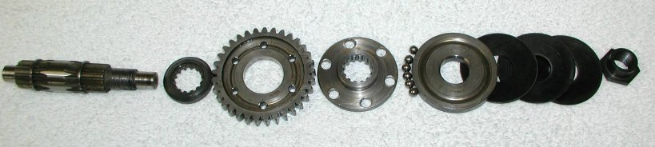
The first step is to put the two circlips (06-8072) on the shaft (06-4706), if they are being replaced. Normally the circlips can be reused.
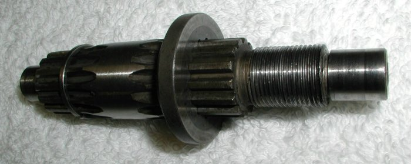
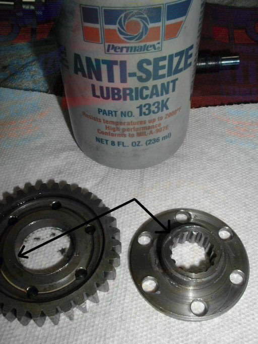
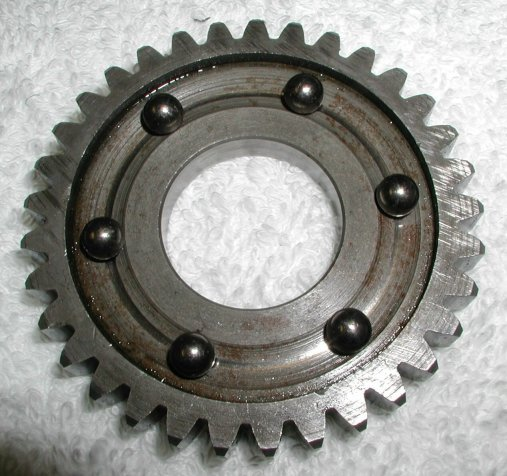
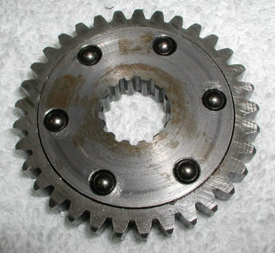
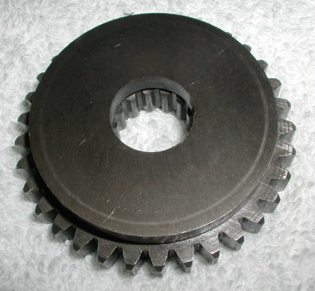
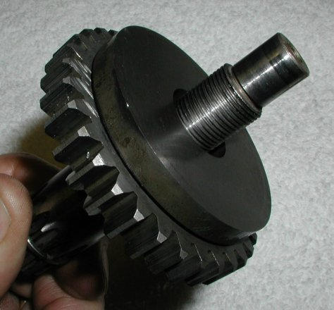
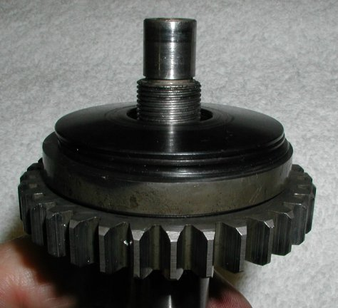
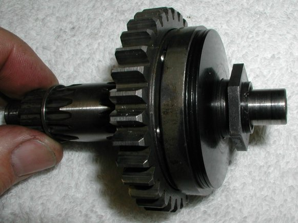
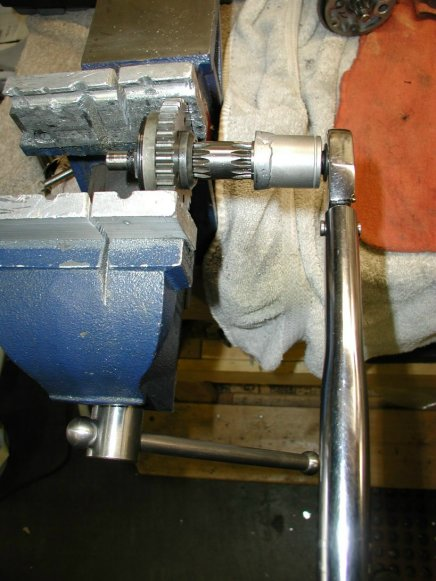
In order to set the 50 ft-lbs. of slip-torque you need to manufacture a tool. To do this I took an old socket that would just fit over the shaft (I used a 12mm socket) and welded it to a thrust washer (06-5652) like the two used on this backfire device. I then placed the assembly in the soft jaws of a vise, holding the gear fixed and then adjusted the nut until 50 ft-lbs. of torque on the shaft would just make the device slip. I found that as I was checking the torque, whenever the device slipped, the nut backed off. By marking the position of the nut I was able to get the proper torque of 50 ft-lbs. to just make the device slip.
Another way to adjust this device which I have not tried, but a couple of customers have tried successfully, is to slowly back off the nut and hit the starter until the device slips and will not turn over the engine. Then tighten the nut until it will just turn over the engine. Again I think you will need to mark the nut in case it backs off when the device slips.
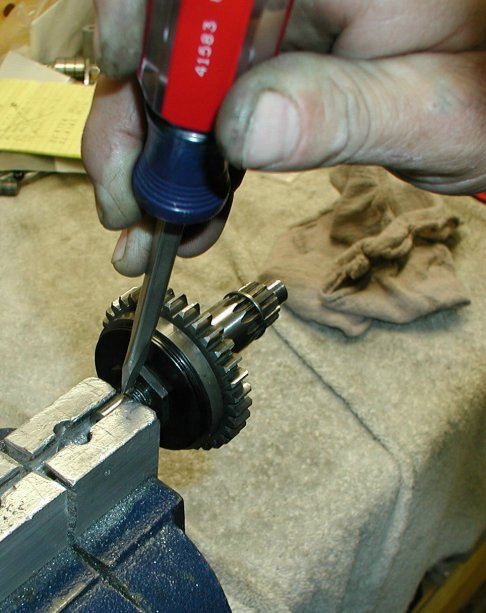
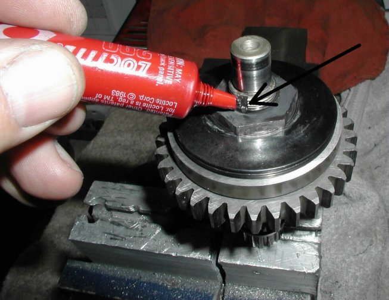
The final step is to peen the flange on the nut into the slot on the shaft and apply some Loctite to the nut. I used 290 green Loctite which is medium strength and applied after assembly.
This page was written and designed by F. H. Eaton & Associates if you have any questions or comments please contact us at info@fheaton.com